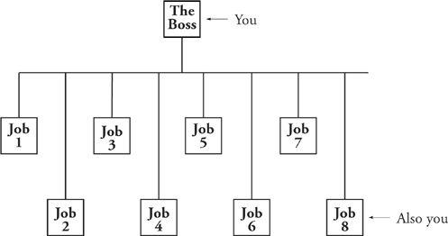

A Dumb Thing We All Do
Looking back over the worst failures of my own and my colleagues’ management careers, I’m struck by the fact that there is one innocent-seeming sin common to them all. It’s something we’ve all done at one time or another. You’ve done it yourself.
Second Law of Bad Management
Put yourself in as your own utility infielder.
The inclination to do this is particularly pronounced in today’s overstressed un-“slack ” organization. You’ve been trimmed and cut and reduced in staff, your overhead has been slenderized and all operations made superefficient. The result is that the person who used to be responsible for whatever underneath you is now gone. All the rest of your people are busy as hell; you don’t want to further burden them with another task, particularly not one that upper management found to be of so little importance that they “trimmed ” the person who was doing it. Yet that “whatever” still has to be done. Oh well, you add it to your own burden and do it yourself. On the org chart we now see:

There are two things about this practice that need to be made clear: